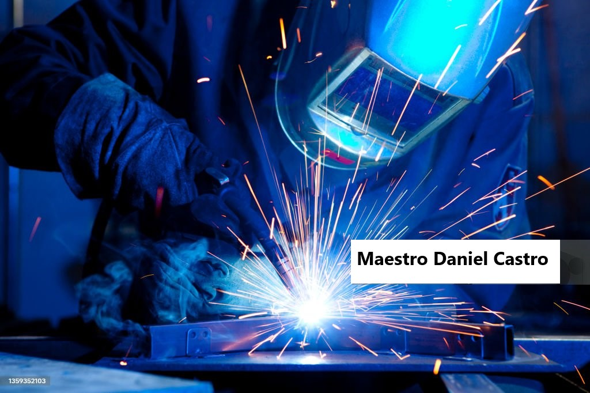
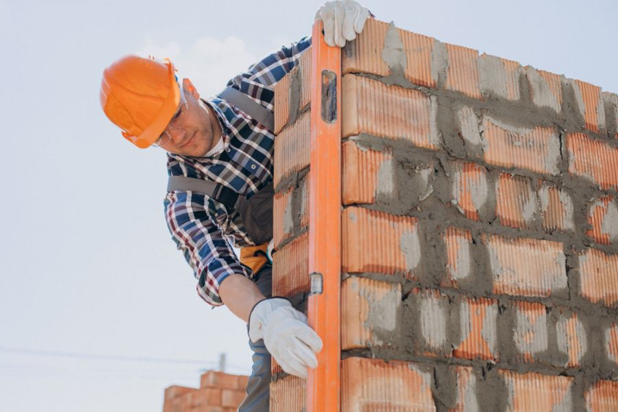
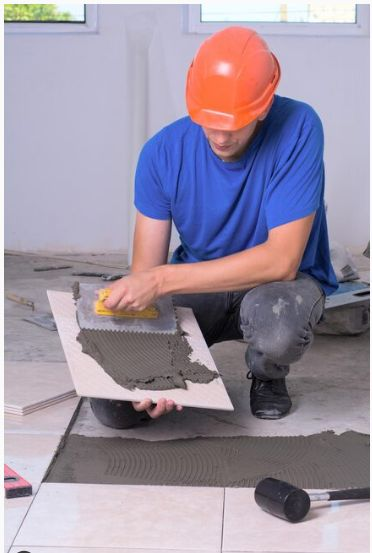

Algunos de mis Proyectos

Construcción de cabaña completa
En las cercanias del bosque valdiviano. El construir una cabaña campestre es todo un proceso integral que combina diseño personalizado, selección de materiales, cimentación y acabados en un entorno natural. Este proyecto requiere planificar fases clave (obra negra, gris y blanca), considerar la logística en zonas alejadas y buscar armonía con el paisaje.
Ver más

Instalación de piso flotante
Preparación de la superficie, colocación de la barrera de humedad y manta, junta de dilatación, Instalación de las tablas, Cortes y trabado, Terminaciones y zócalos
Ver más
Soldaduras
Como maestro soldador mi labor es unificar una o más piezas metálicas. mediante el método de la soldadura, hago diferentes trabajos como; la fabricación, arreglo o instalación de diferentes elementos de metal, como pueden ser vigas, portones, rejas, escaleras, adornos, muebles, maquinarias y más.
Ver más
Albañileria
Los servicios de construcción que ofrecemos son un conjunto de servicios especializados que se enfocan en la realización de reparaciones y remodelaciones en viviendas, edificios y otras estructuras. Estos servicios pueden incluir reparaciones de paredes y techos, construcción de estructuras como muros, terrazas y escaleras, utilizando herramientas y técnicas especializadas para asegurarnos que el trabajo se realice de manera eficiente y segura. En resumen, los servicios de construcción y obras menores son una solución práctica y efectiva para quienes necesitan realizar reparaciones y remodelaciones en sus hogares u oficinas sin la necesidad de ejecutar una construcción mayor. Usted tendrá la seguridad de que sus proyectos serán realizados de manera efectiva y eficiente.
Ver más
Colocación de ceramicas
La colocación de cerámicas implica un proceso técnico de revestimiento que abarca desde la planificación y nivelación de la superficie hasta la adhesión, fraguado (empastado) y limpieza final. Requiere preparar el sustrato, aplicar adhesivo con llana dentada, asegurar la nivelación con crucetas y realizar cortes precisos.
Ver más